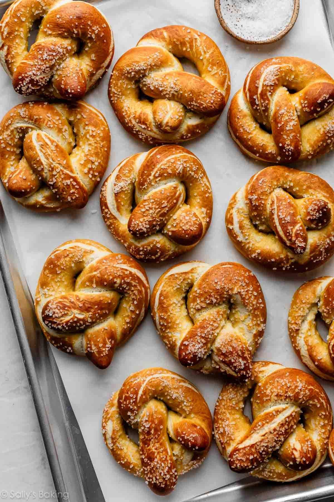

Pretzel

Description
Quick and easy soft pretzel recipe involving traditional baking soda solution.
Ingredients
- 2 and 1/4 tsp instant/active dry yeast
- 1 tbsp brown/granulated sugar
- 1 and 1/2 cups warm water(dough)
- 1 tbsp unsalted butter
- 1 tsp salt
- 4 cups all purpose flour
- coarse salt
- 1/2 cup baking soda
- 9 cups water(baking soda solution)
Steps
- Whisk the yeast and sugar into warm water. Cover and allow to sit for 1 minute.
- Whisk in the melted butter and salt. Add 3 cups (375g) of flour. Mix with a wooden spoon (or dough hook attachment if using a stand mixer) until combined.
Add 3/4 cup (94g) more flour until the dough is slightly tacky and pulls away from the sides of the bowl.
If it is still sticky, add up to 1/4 cup more (31g) flour, 1 Tablespoon at a time, as needed. Poke the dough with your finger—if it bounces back, it is ready to knead.
- Keep the dough in the mixer and beat for an additional 3 to 5 full minutes, or knead by hand on a lightly floured surface for 3 to 5 minutes.
If the dough becomes too sticky during the kneading process, sprinkle 1 teaspoon of flour at a time on the dough or on the work surface/in the bowl to make a soft,
slightly tacky dough. Do not add more flour than you need because you do not want a dry dough. After kneading, the dough should still feel a little soft.
Poke it with your finger—if it slowly bounces back, your dough is ready to rise. You can also do a “windowpane test” to see if your dough has been kneaded long enough:
tear off a small (roughly golf ball-size) piece of dough and gently stretch it out until it’s thin enough for light to pass through it. Hold it up to a window or light.
Does light pass through the stretched dough without the dough tearing first? If so, your dough has been kneaded long enough and is ready to rise.
If not, keep kneading until it passes the windowpane test.
- Shape the kneaded dough into a ball. Cover lightly with a towel and allow to rest for 10 to 30 minutes.
(Meanwhile, I like to get the water + baking soda boiling as instructed in step 8.)
- Preheat oven to 400°F (204°C). Line 2 baking sheets with parchment paper or silicone baking mats.
Silicone baking mats are highly recommended over parchment paper. If using parchment paper, lightly spray with nonstick spray or grease with butter. Set aside.
- With a sharp knife or pizza cutter, cut dough into 75g sections, which is about 1/3 cup of dough each.
- Roll the dough into a 20-22-inch rope. Form a circle with the dough by bringing the 2 ends together at the top of the circle. Twist the ends together.
Bring the twisted ends back down towards yourself and press them down to form a pretzel shape.
- Bring baking soda and 9 cups of water to a boil in a large pot. Drop 1-2 pretzels into the boiling water for 20-30 seconds.
Any longer than that and your pretzels will have a metallic taste. Using a slotted spatula, lift the pretzel out of the water and allow as much of the excess water to drip off.
Place pretzel onto prepared baking sheet. Sprinkle the top with coarse sea salt. Repeat with remaining pretzels.
If desired, you can cover and refrigerate the boiled/unbaked pretzels for up to 24 hours before baking in step 9.
- Bake for 12–15 minutes or until dark golden brown.
- Remove from the oven and, if desired, serve warm with cheese sauce.
- Cover and store leftover pretzels at room temperature for up to 3 days.
Home